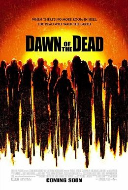

Dawn of the Dead



Director: Jack Snyder
Cast: Sarah Polley, Ving Rhames, Jake Weber.
Distributor: Universal.
Classification: MA15+
Running Time: 105 Minutes.
Believe it or not, the dependable ol’ horror staple that is the zombie has always been an effective vehicle for complex social commentary. Witness the recent success of Shaun of the Dead: while essentially a genre-bending mix of horror and romantic comedy, even there the zombies were a metaphor for the boredom of contemporary English urban life. All this can be traced back to George Romero’s seminal 70’s horror classic Dawn of the Dead. With the groundwork already laid several years earlier by its classic low-budget predecessor Night of the Living Dead, the sequel once again depicted an urban landscape that had been ravaged by the walking undead.
Focusing on the plight of several survivors who had holed themselves up in a shopping mall, it was this setting that provided Romero with an opportunity to display his cutting social satire. As the zombies continued to instinctually stumble from shop window to shop window, drawn to the place that had provided such a vital definition to their existence during their waking days, the human survivors eked out an existence with all of the consumer comforts that they could possibly ever ask for – effectively making them even deader than the undead who surrounded them. So following in the footsteps of last year’s less than perfect remake of The Texas Chainsaw Massacre, we have another “reinterpretation” of a bonifide cinematic classic. So does it have the chops to match the original?
From early on in the film, Dawn of the Dead subverts our expectations on a number of levels. Firstly, the remake actually has very little in common with the original; and secondly, from the stunning opening 10 minutes and onwards it surprises us by managing to be pretty damn excellent. Unlike the original that began well after the initial zombie plague that transpired in Night of the Living Dead, the original takes you back to where the madness begins. It starts off as what seems like a normal morning for nurse Anna (played by indie-darling Sarah Polley) – that is, until she witnesses the murder of her fiancé and walks outside to find that the viciously hostile undead have taken over her quiet suburban streets. These opening scenes of zombie apocalypse really are a shock to the senses, and the bloodletting, explosions, car crashes and general chaos so exciting that even the most jaded of horror fans won’t be able to resist enjoying themsleves. By the skin of her teeth Anna escapes and stumbles upon another group of survivors (including Ving Rhames, Jake Weber, Mekhi Phifer and Ty Burrell), and together they decide that the best course action would be to head towards the haven provided by the local shopping mall.
So once again the land of mindless consumerism provides the backdrop for the film – except this time the satirical possibilities are made absolutely no use of at all. Instead, what we have is something that has a lot more in common with your typical action thriller – Dawn of the Dead has white-knuckle, edge-of-your-seat suspense by the bucketful, and the tension really is kept full-throttle from the stunning opening scenes to the bleaker-than-bleak conclusion. As the survivors barricade themselves in from the zombie hordes that are swamping the shopping mall, and later attempt to escape, there is plenty of fast-paced action and intense zombie shootouts to keep the blood pumping. Other memorable moments include a truly unnerving scene featuring a disgustingly overweight zombie woman, and a seriously twisted game played for amusement by the mall’s inhabitants that involves blowing the heads off zombie celebrity look-alikes.
Some of the acting comes across as amateurish, and the scenes that shoot for melodrama are more than a little overblown. But on the whole, the script is well developed, none of the situations pan out as predictably as you may expect from a horror film, and for a first time directing effort the visuals of the film are incredibly slick and innovative – miles ahead of your usual horror fare. Backed up with plenty of sadistic gore for the horror fans, in many ways Dawn of the Dead really is an A-grade horror film. But with so little in common with the original, the question begs – why even make it a remake in the first place? The original film’s setting of a shopping mall really serves no purpose at all – with only a few bare scenes of the mall’s inhabitants indulging in rampant consumerism, the film may as well have been set in an office block and it wouldn’t have made any difference. Dawn of the Dead actually has a lot more in common with last year’s incredible reinterpretation of the zombie flick 28 Days Later: there are shots of zombie shadows running across tunnel walls, lots of quick-cut editing and shaky camera shots, and the undead don’t shuffle – they run like a motherfucker. It doesn’t even have any of the iconic horror characters that the Texas Chainsaw Massacre remake had to draw on – all it has is the most generic of all horror clichés, the zombie.
If you take it out of the wider context of the film that preceded it and view it on its own merits, then Dawn of the Dead is a tight little horror film – superb even. But if you rank it alongside the genre-defining horror and superb social commentary of Romero’s original, then Dawn of the Dead is left seriously lacking. And when you remake a film solely as a tribute to something that came before it, then it’s damn near impossible not to make comparisons and draw parallels. The Dawn of the Dead remake has no social commentary to speak of, and not unlike the Texas Chainsaw Massacre remake it goes out of its way to remove anything that made the original meaningful or memorable. It makes for a pretty poor reflection on the current state of US filmmaking, and even worse, it’s insulting to the audience’s intelligence. But have hope, because George Romero has finally received the greenlight for the fourth film in his classic zombie saga, Land of the Dead. Maybe then he can show the young ‘uns how it’s really done.
Rating: 3 out of 5